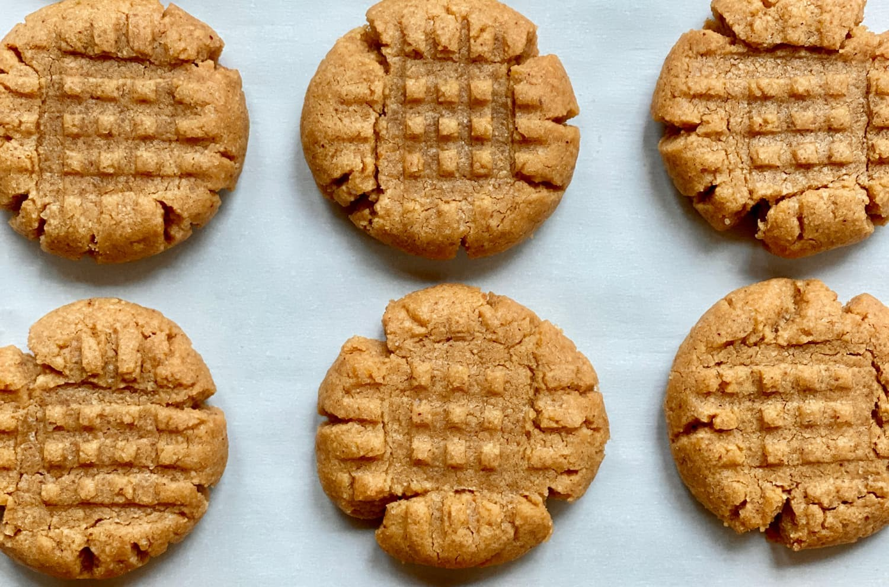

приготовление:
-
В средней миске смешайте 313 г просеянной пшеничной муки , 1 ч.л. разрыхлителя, 1 ч.л. соды и 0,5 ч.л. соли. Отставить в сторону.
-
С помощью миксера взбить 226 гр. смягченного сливочного масла и 250 гр. коричневого сахара на средней скорости до получения гладкой массы, около 1-2 минут. Добаить 2 яйца и взбить на высокой скорости до объединения, примерно 1 минуту. Добить 500 гр. арахисового масла и 1.5 ч.л. ванили, затем взбить на высокой скорости до объединения.
-
Добавить сухие ингредиенты к влажным, затем перемешать на низкой скорости до объединения. Тесто будет плотным и мягким.
-
Накрыть и охладить тесто в течение 1 часа в холодильнике (и до 2-3 дней. если охлаждаете на длительное время - дайте постоять при комнатной температуре не менее 30 минут перед формированием и выпеканием, так как тесто будет достаточно твердым)
-
Разогреть духовку до 185°C. Сформировать шарики из теста, разделив либо на части (гдето 24-40 шт, зависит от желаемого размера), а затем обвалять шарики в сахаре. Использовать вилку, чтобы сделать решетчатый отпечаток на каждом из них. Выпекать каждую партию на бумаге для выпечки в течение 10-12 минут, если маленькие (штук 40) и 15-17 минут, если побольше (24 штуки), пока боковые стороны не станут слегка золотистыми. Центры будут выглядеть очень мягкими - это ок, когда они подостынут они застынут.
-
Вынуть из духовки. Охладить печенье на противнях в течение 5 минут, затем переложить на решетку для полного остывания. Печенье сохраняется свежим, закрытым при комнатной температуре, до 1 недели.